산업안전기사 (2008-03-02 기출문제)
1과목: 안전관리론
1. 산업안전보건법상 산업안전보건 관련교육 과정 중 정기교육 대상자에 해당되지 않는 사항은?
- 생산직 종사 근로자
- 사무직 종사 근로자
- 주식회사 임원
- 관리감독자 지위에 있는 자
(정답률: 88%)

2. 산업안전보건법에서 정한 사업내 안전보건교육 중 건설업에 종사하지 않는 사람에 관한 내용으로 틀린 것은?
- 재해시 임시교육 - 1시간
- 채용시 교육 - 8시간
- 작업내용 변경시 교육 - 2시간
- 특별안전보건교육 - 16시간
(정답률: 56%)
3. 다음 중 브레인스토밍(Brain storming)의 4원칙과 거리가 먼 것은?
- 필수적 사전학습
- 자유분방한 발언
- 대량적인 발언
- 타인 의견의 수정발언
(정답률: 83%)
4. 교육방법 중 실제의 장면이나 상태와 극히 유사한 상황을 인위적으로 만들어 그 속에서 학습하도록 하는 교육방법을 무엇이라 하는가?
- 실연법
- 프로그램 학습법
- 시범
- 모의법
(정답률: 57%)
5. 적응기제(適應機制, Adjustment Mechanism)의 종류 중 도피적 기제(행동)에 속하지 않는 것은?
- 고립
- 퇴행
- 억압
- 합리화
(정답률: 82%)
6. 도수율이 24.5 이고, 강도율이 2.15 의 사업장이 있다. 이 사업장에서 한 근로자가 입사하여 퇴직할 때까지는 며칠간의 근로손실일수가 발생하겠는가?
- 2.45일
- 215일
- 2150일
- 2450일
(정답률: 71%)
7. 안전대의 종류는 사용구분에 따라 벨트식과 안전그네식으로 구분되는데 이 중 벨트식과 안전그네식에 공통으로 적용 하는 것을 나열한 것은?
- 추락방지대, 안전블록
- 1개 걸이용, 추락방지대
- U자 걸이용, 안전블록
- 1개 걸이용, U자 걸이용
(정답률: 45%)
8. 모랄 서베이의 방법 중 태도조사법에 해당하지 않는 것은?
- 질문지법
- 면접법
- 관찰법
- 집단토의법
(정답률: 53%)
9. 산업재해의 분석 및 평가를 위하여 재해발생 건수 등의 추이에 대해 한계선을 설정하여 목표 관리를 수행하는 재해통계 분석기법은?
- 폴리건(polygon)
- 관리도(control chart)
- 파레토도(pareto diagram)
- 특성요인도(cause & effect diagram)
(정답률: 76%)
10. 다음 중 재해율에 관한 설명으로 틀린 것은?
- 연천인율, 강도율, 도수율 등이 있다.
- 재해율의 단위는 % 이다.
- 근로자 1000명당 1년간에 발생하는 재해발생자수의 비율을 연천인율이라 한다.
- 강도율이란 연간 총 근로시간 1000시간당 재해발생으로 인한 근로손실일수를 말한다.
(정답률: 57%)
11. 도수율이 11.65인 사업장의 연천인율은 약 얼마인가?
- 23.96
- 25.76
- 27.96
- 30.36
(정답률: 71%)
12. 다음 중 방진마스크의 선정기준에 해당하지 않는 것은?
- 배기저항이 낮을 것
- 흡기저항이 낮을 것
- 사용적이 클 것
- 시야가 넓을 것
(정답률: 66%)
13. 다음 중 주의의 수준이 phase 0 인 상태에서 의식상태로 옳은 것은?
- 무의식 상태
- 의식의 이완상태
- 명료한 상태
- 과긴장 상태
(정답률: 83%)
14. 다음 중 산업안전심리의 5대 요소에 해당하지 않는 것은?
- 습관
- 동기
- 감정
- 지능
(정답률: 62%)
15. 산업안전보건법에서 규정한 안전관리자의 교체(개임)사유에 해당하지 않는 것은?
- 중대재해가 연간 3건 이상 발생할 때
- 발생한 사고로 인해 1억원이상 경제적 손실이 있을 때
- 관리자가 질병이나 그 밖의 사유로 3개월 이상 직무를 수행할 수 없게 될 때
- 해당 사업장의 연간 재해율이 같은 업종의 평균재해율의 2배 이상일 때
(정답률: 69%)
16. 다음 중 몇 사람의 전문가에 의하여 과제에 관한 견해를 발표한 뒤에 참가자로 하여금 의견이나 질문을 하게 하여 토의하는 방법을 무엇이라 하는가?
- 심포지엄(symposium)
- 패널 디스커션(panel discussion)
- 버즈 세션(buzz session)
- 포럼(forum)
(정답률: 78%)
17. Thorndike의 시행착오설에 의한 학습의 법칙이 아닌 것은?
- 연습의 법칙
- 효과의 법칙
- 동일성의 법칙
- 준비성의 법칙
(정답률: 46%)
18. 다음 중 무재해운동 추진의 3기둥에 해당되지 않는 것은?
- 직장 소집단 자주활동의 활발화
- 관리감독자에 의한 안전보건의 추진
- 최고 경영자의 경영자세
- 근로자의 적극적 참여
(정답률: 48%)
19. 안전관리조직의 가장 중요한 기능으로서 적당하지 않은 것은?
- 경영적 차원에서의 안전조치 기능
- 안전상의 제안조치를 강구할 수 있는 기능
- 재해사고시 조사와 피해억제 및 긴급조치 기능
- 안전관리 조직 운영의 기능
(정답률: 37%)
20. 다음 중 억측판단이 발생하는 배경으로 볼 수 없는 것은?
- 정보가 불확실할 때
- 희망적인 관측이 있을 때
- 타인의 의견에 동조할 때
- 과거의 성공한 경험이 있을 때
(정답률: 49%)
2과목: 인간공학 및 시스템안전공학
21. 다음 중 결함수분석법(FTA)의 특징이 아닌 것은?
- Bottom up 형식
- Top Down 형식
- 특정사상에 대한 해석
- 논리기호를 사용한 해석
(정답률: 73%)
22. 어떤 설비의 시간당 고장률이 일정하다고 하면 이 설비의 고장간격은 다음 중 어떠한 확률분포를 따르는가?
- t분포
- Erlang 분포
- 와이블분포
- 지수분포
(정답률: 69%)
23. 다음 FTA에서 사용하는 논리기호 중 주어진 시스템의 기본사상을 나타내는 것은?
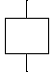
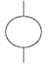
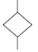
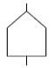
(정답률: 74%)
24. 다음 중 인간공학 연구조사에서 사용되는 기준의 구비조건으로 볼 수 없는 것은?
- 적절성
- 무오염성
- 부호성
- 기준척도의 신뢰성
(정답률: 68%)
25. 다음 중 동작경제의 원칙과 가장 거리가 먼 것은?
- 두 팔의 동작은 동시에 같은 방향으로 움직일 것
- 두 손의 동작은 같이 시작하고 같이 끝나도록 할 것
- 급작스런 방향의 전환은 피하도록 할 것
- 가능한 한 관성을 이용하여 작업하도록 할 것
(정답률: 66%)
26. 다음 중 시스템의 수명곡선에서 초기고장기간에 발생하는 고장의 원인으로 볼 수 없는 것은?
- 표준 이하의 재료를 사용
- 사용자의 과오
- 불충분한 품질관리
- 빈약한 제조기술
(정답률: 58%)
27. [그림]과 같이 FTA로 분석된 시스템에서 현재 모든 기본 사상에 대한 부품이 고장난 상태이다. 부품 X1부터 부품X5 까지 순서대로 복구한다면 어느 부품을 수리 완료하는 순간부터 시스템은 정상가동이 되겠는가?
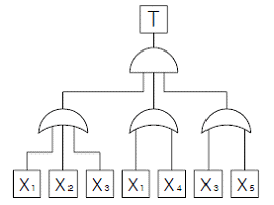
- 부품 X2
- 부품 X3
- 부품 X4
- 부품 X5
(정답률: 73%)
28. 다음 중 인간실수확률에 대한 추정기법으로 가장 적절하지 않은 것은?
- 위급 사건 기법
- THERP
- 직무 위급도 분석
- MORT
(정답률: 42%)
29. 다음 중 진동의 영향을 가장 많이 받는 인간성능은?
- 감시(monitoring)작업
- 반응시간(reaction time)
- 추적(tracking)능력
- 형태식별(pattern recognition)
(정답률: 56%)
30. 일반적으로 실내공간의 조명을 설계할 때 조명에 대한 반사율이 낮은 면에서 높은 순으로 올바르게 나열된 것은?
- 바닥 - 창문 - 가구 - 벽
- 바닥 - 가구 - 벽 - 천장
- 창문 - 바닥 - 가구 - 벽
- 벽 - 천장 - 가구 - 바닥
(정답률: 77%)
31. 다음 중 전기적 생리신호 측정방법 중 근육의 활동도를 측정하는 방법은?
- ECG
- EMG
- EEG
- EOG
(정답률: 66%)
32. 각각 1.2×104 시간의 수명을 가진 요소 4개가 병렬계를 이룰 때 이 계의 수명은 얼마인가?
- 3×103 시간
- 1.2×104 시간
- 2.5×104 시간
- 4.8×104 시간
(정답률: 40%)
33. 다음 중 통제표시비에 대한 설명으로 틀린 것은?
- X가 통제기기의 변위량, Y가 표시장치의 변위량 일 때 X/Y 로 표현된다.
- Knob의 통제표시비는 손잡이 1회전시 움직이는 표시장치 이동거리의 역수로 나타낸다.
- 통제표시비가 클수록 민감한 제어장치이다.
- 최적의 통제표시비는 제어장치의 종류나 표시장치의 크기, 허용오차 등에 의해 달라진다.
(정답률: 69%)
34. [그림]과 같은 시스템에서 부품 A, B, C, D의 신뢰도가 모두 r로 동일할 때 이 시스템의 신뢰도는?
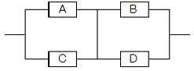
- r2(2-r)2
- r2(2-r2 )
- r2 (2-r)
- r(2-r2)
(정답률: 46%)
35. 화학설비에 대한 안전성 평가에서 정량적 평가항목에 해당되지 않는 것은?
- 취급물질
- 화학설비용량
- 공정
- 압력
(정답률: 68%)
36. FMEA의 위험성 분류 중 카테고리-3과 가장 관계가 깊은 것은?
- 영향 없음
- 활동의 지연
- 작업수행의 실패
- 생명 또는 가옥의 상실
(정답률: 44%)
37. 다음 중 시스템 안전프로그램 계획에 포함되지 않아도될 사항은?
- 안전조직
- 안전기준
- 안전종류
- 안전성 평가
(정답률: 54%)
38. 다음 중 시각적 부호의 3가지 유형과 관계없는 것은?
- 임의적 부호
- 묘사적 부호
- 사실적 부호
- 추상적 부호
(정답률: 58%)
39. 다음 불 대수 관계식 중 틀린 것은?
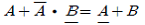
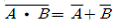
- A+B= AㆍB
- A(A+B)=A
(정답률: 48%)
40. 다음 중 고온에서의 생리적 반응으로 볼 수 없는 것은?
- 근육의 이완
- 체표면적의 증가
- 피부혈관의 확장
- 화학적 대사작용의 증가
(정답률: 57%)
3과목: 기계위험방지기술
41. 기계설비보전에 있어서 기계 고장율 곡선(모형)의 고장형태 중 고장율이 가장 낮은 것은?
- 우발고장
- 감소고장
- 초기고장
- 마모고장
(정답률: 53%)
42. 기계의 왕복운동을 하는 운동부와 고정부 사이에 형성되는 위험점은?
- 끼임점(shear point)
- 절단점(cutting point)
- 물림점(nip point)
- 협착점(squeeze point)
(정답률: 70%)
43. 방호덮개의 설치목적과 가장 관계가 먼 것은?
- 가공물 등의 낙하에 의한 위험방지
- 위험부위와 신체의 접촉방지
- 방음이나 집진
- 주유나 검사의 편리성
(정답률: 70%)
44. 취성재료의 극한강도가 900Mpa 이며 허용응력이 500Mpa일 경우 안전계수(safety factor)는 얼마인가?
- 0.56
- 1.12
- 1.40
- 1.80
(정답률: 66%)
45. 지게차의 작업상태별 안정도에 관한 내용으로 틀린 것은? (단, V는 최고속도[km/h])
- 주행시의 전후 안정도는 18% 이다.
- 하역작업시의 좌우 안정도는 6% 이다.
- 하역작업시의 전후 안정도는 20% 이다.
- 주행시의 좌우 안정도는 (15+1.1V)% 이다.
(정답률: 59%)
46. 다음 중 보일러 운전시 안전수칙으로 잘못 된 것은?
- 가동 중인 보일러에는 작업자가 항상 정위치를 떠나지 아니할 것
- 보일러의 각종 부속장치의 누설 상태를 점검할 것
- 압력방출장치는 매 5년 마다 정기적으로 작동 시험을 할 것
- 노내의 환기 및 통풍 장치를 점검할 것
(정답률: 74%)
47. 앞면 롤러 지름이 600mm 이고 회전수가 20rpm의 경우 롤러기에 설치하는 급정지장치의 급정지거리는?
- 약 942mm 이내
- 약 753mm 이내
- 약 802mm 이내
- 약 993mm 이내
(정답률: 52%)
48. 지름이 5cm 이상을 갖는 회전중인 연삭숫돌의 파괴에 대비한 방호장치는?
- 받침대
- 플랜지
- 덮개
- 프레임
(정답률: 72%)
49. 목재 가공기의 반발예방장치와 같이 위험장소에 설치하여 위험원이 비산하거나 튀는 것을 방지하는 등 작업자로부터 위험원을 차단하는 방호장치는?
- 포집형 방호장치
- 감지형 방호장치
- 위치제한형 방호장치
- 접근반응형 방호장치
(정답률: 64%)
50. 다음 중 리프트의 안전장치에 해당하는 것은?
- 그리드(grid)
- 아이들러(idler)
- 리미트 스위치(limit switch)
- 스크레이퍼(scraper)
(정답률: 70%)
51. 고속회전체와 회전시험을 하기 전 미리 결함 유무를 확인 할 수 있는 비파괴검사를 실시하도록 의무화(산업안전기준에 관한 규칙)되어 있는 회전축의 중량과 속도조건은?
- 중량 1톤 초과, 원주속도 120m/s 이상인 것
- 중량 0.8톤 초과, 원주속도 100m/s 이상인 것
- 중량 1톤 미만, 원주속도 100m/s 이상인 것
- 중량 0.8톤 미만, 원주속도 120m/min 이하인 것
(정답률: 69%)
52. 프레스의 금형조정작업시 위험한계 내에서 작업하는 작업자의 안전을 위하여 안전블록의 사용 등 필요한 조치를 취해야 한다, 다음 중 이에 해당하는 조정작업으로 옳은 것은?
- 금형의 부착작업 및 해체작업
- 금형의 설계작업 및 부착작업
- 금형의 설계작업 및 설치의 지휘작업
- 금형 설치의 지휘작업
(정답률: 68%)
53. 산업용 로봇의 작동범위 내에서 당해 로봇에 대하여 교시 등의 작업시 위험을 방지하기 위하여 수립해야 하는 지침사항에 해당하지 않는 것은?
- 로봇의 구성품의 설계절차
- 2명 이상의 근로자에게 작업을 시킬 경우의 신호방법
- 로봇의 조작방법 및 순서
- 작업 중의 매니퓰레이터의 속도
(정답률: 72%)
54. 연삭기 작업시 작업자가 인심하고 작업을 할 수 있는 상태는?
- 탁상용 연삭기에서 숫돌과 작업 받침대의 간격이 5mm 이다.
- 덮개는 인장강도가 18kg/mm2 이상이고, 연신율이 14% 이상인 압연강판이다.
- 작업 시작전 1분 이상 시운전을 실시하여 해당 기계의 이상 여부를 확인한다.
- 숫돌교체후 2분 이상 시운전을 실시하여 당해 기계의 이상 여부를 확인 하였다.
(정답률: 65%)
55. 재료에 힘이 작용할 때, 힘의 제거와 동시에 재료가 원형으로 복귀하는 현상에 대하여 바르게 설명한 것은?
- 응력과 변형률은 반비례한다.
- 변형률에 대한 응력의 비는 탄성계수이다.
- 응력은 불변이다.
- 탄성계수와 변형률은 비례한다.
(정답률: 47%)
56. 다음 설비 진단 방법 중 비파괴 시험에 해당하지 않는 것은?
- 피로시험
- 침투탐상시험
- 방사선투과 시험
- 초음파탐상시험
(정답률: 73%)
57. 연삭숫돌의 상부를 사용하는 것을 목적으로 하는 탁상용 연삭기의 안전덮개 노출각도로 다음 중 가장 적합한 것은?(오류 신고가 접수된 문제입니다. 반드시 정답과 해설을 확인하시기 바랍니다.)
- 90° 이내
- 65° 이상
- 60° 이상
- 125° 이내
(정답률: 55%)
58. 산업안전기준에 관한 규칙에 따라 연삭기 또는 평삭기의 테이블, 형삭기램 등의 행정끝이 근로자에게 위험을 미칠 우려가 있을 때 위험방지를 위해 해당부위에 설치하여야 하는 것은?
- 덮개 또는 울
- 방망
- 방호판
- 급정지 장치
(정답률: 71%)
59. 기계설비가 이상이 있을 때 기계를 급정지시키거나 방호장치가 작동되도록 하는 것과 전기회로를 개선하여 오동작을 방지하거나 별도의 완전한 회로에 의해 정상 기능을 찾을 수 있도록 하는 것은?
- 구조부분 안전화
- 기능적 안전화
- 보전작업 안전화
- 외관상 안전화
(정답률: 67%)
60. 목재가공용 둥근톱 기계의 반발예방용 방호장치가 아닌 것은?
- 수봉식 안전기
- 분할날(spreader)
- 반발방지롤(roll)
- 반발방지발톱(finger)
(정답률: 66%)
4과목: 전기위험방지기술
61. 분진은 형태의 인화성 분진이 폭발농도를 형성할 정도로 충분한 양이 정상가동 중에 연속적으로 또는 자주 존재하거나 제어할 수 없을 정도의 양 및 두께의 분진층이 형성될 수 있는 장소로 정의되는 폭발위험장소는?
- 0종 장소
- 1종 장소
- 20종 장소
- 21종 장소
(정답률: 45%)
62. 과전류 차단기로 저압전로에 사용하는 30A 배선용 차단기 60A의 전류를 통한 경우 몇 분이내에 자동적으로 동작 하여야 하는가?
- 2분
- 4분
- 6분
- 8분
(정답률: 74%)
63. 누전차단기의 접속시 유의 사항으로 옳지 않은 것은?
- 정격부하전류가 50A 이상인 전기기계ㆍ기구에 접속되는 경우 정격감도전류는 200mA 이하, 작동시간은 0.1초 이내로 할 수 있다.
- 전기기계ㆍ기구에 접속되는 경우 정격감도전류가 50mA이하이고, 작동시간은 0.03초 이내여야 한다.
- 지락보호용 누전차단기는 과전류를 차단하는 퓨즈 또는 차단기 등과 조합하여 접속한다.
- 평상시 누설전류가 미소한 소용량의 부하의 전로인 경우 분기회로에 일괄하여 누전차단기를 접속할 수 있다.
(정답률: 59%)
64. 다음 중 방폭전기기기의 구조별 표시방법으로 옳지 않은 것은?
- 내압방폭구조 : p
- 본질안전방폭구조 : ia, ib
- 유입방폭구조 : o
- 안전증방폭구조 : e
(정답률: 60%)
65. 전기기계ㆍ기구의 조작시 등의 안전조치에 관한 사항으로 옳지 않은 것은?
- 감전 또는 오조작에 의한 위험을 방지하기 위하여 해당 전기기계ㆍ기구의 조작부분은 150Lux 이상의 조도가 유지되도록 하여야 한다.
- 전기기계ㆍ기구의 조작부분에 대한 점검 또는 보수를 하는 때에는 전기기계ㆍ기구로부터 폭 50cm 이상의 작업공간을 확보해야 한다.
- 전기적 불꽃 또는 아크에 의한 화상의 우려가 높은 600V 이상 전압의 충전전로작업에는 방염처리 된 작업복 또는 난연성능을 가진 작업복을 착용하여야 한다.
- 전기기계ㆍ기구의 조작부분에 대한 점검 또는 보수를 하기 위한 작업공간의 확보가 곤란할 때에는 절연용 보호구를 착용하여야 한다.
(정답률: 51%)
66. 위험방지를 위한 전기기계ㆍ기구의 설치시 고려할 사항으로 거리가 먼 것은?
- 전기기계ㆍ기구의 충분한 전기적 용량 및 기계적 강도
- 전기기계ㆍ기구의 안전효율을 높이기 위한 시간 가동율
- 습진ㆍ분진 등 사용장소의 주위 환경
- 전기적ㆍ기계적 방호수단의 적정성
(정답률: 55%)
67. 인체에 대전된 정전기로 인하여 화재 또는 폭발의 위험이 발생할 우려가 있을 때의 조치사항으로 옳지 않은 것은?
- 정전기 대전 유도용 안전화 착용
- 제전복 착용
- 정전기 제전용구의 사용
- 작업장 바닥 등의 도전성 조치
(정답률: 41%)
68. 다음 중 전격의 위험을 가장 잘 설명하고 있는 것은?
- 통전전류가 크고, 주파수가 높고, 장시간 흐를수록 위험하다.
- 통전전압이 높고, 주파수가 높고, 인체저항이 낮을수록 위험하다.
- 통전전류가 크고, 장시간 흐르고 인체의 주요한 부분을 흐를수록 위험하다.
- 통전전압이 높고 인체저항이 높고, 인체의 주요한 부분을 흐를수록 위험하다.
(정답률: 64%)
69. 인화성 물질을 함유하는 도료 및 접착제 등을 도포하는설비 또는 가연성 분진을 취급하는 설비에 접지를 하는 목적으로 가장 알맞은 것은?
- 낙뢰방지
- 정전기에 의한 화재 또는 폭발방지
- 기기의 오작동에 의한 산업재해 방지
- 절연강도 증가에 의한 감전방지
(정답률: 65%)
70. 인체의 전기저항이 5000Ω 이고, 세동전류와 통전시간과의 관계를
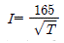
라 할 경우, 심실세동을 일으키는 위험에너지는 약 몇 줄[J]인가? (단, 통전시간은 1초로 한다.)- 5J
- 30J
- 136J
- 825J
(정답률: 69%)
71. 인체가 현저하게 젖어있는 상태 또는 금속성의 전기기계 장치나 구조물에 인체의 일부가 상시 접촉되어 있는 상태에서의 허용접촉전압은 일반적으로 몇[V] 이하로 하고 있는가?
- 2.5V 이하
- 25V 이하
- 50V 이하
- 75V 이하
(정답률: 62%)
72. 다음 중 정전기 방전의 종류에 속하지 않는 것은?
- 스트리머방전
- 코로나방전
- 연면방전
- 적외선방전
(정답률: 71%)
73. 다음 중 감전사고 방지대책으로 옳지 않은 것은?
- 설비의 필요한 부분에 보호접지 실시
- 노출된 충전부에 통전망 설치
- 안전전압 이하의 전기기기 사용
- 전기기기 및 설비의 정비
(정답률: 61%)
74. 접지목적에 따른 종류에서 사용목적이 다른 것은?
- 피뢰용접지 : 낙뢰로부터 전기기기의 손상방지
- 등전위접지 : 정전기의 축적에 의한 폭발방지
- 계통접지 : 고ㆍ저압 전로 혼촉시 감전 및 화재방지
- 기기접지 : 누전이 되고 있는 기기 접촉시 감전방지
(정답률: 69%)
75. 다음 중 가수전류에 대한 설명으로 옳은 것은?
- 마이크 사용 중 전격으로 사망에 이른 전류
- 전격을 일으킨 전류가 교류인지 직류인지 구별할 수없는 전류
- 충전부로부터 인체가 자력으로 이탈할 수 있는 전류
- 몸이 물에 젖어 전압이 낮은 데도 전격을 일으킨 전류
(정답률: 69%)
76. 다음 중 피뢰기가 갖추어야 할 특성으로 알맞은 것은?
- 충격방전 개시전압이 높을 것
- 제한 전압이 높을 것
- 뇌전류의 방전 능력이 클 것
- 속류 차단을 하지 않을 것
(정답률: 62%)
77. 대지에서 용접작업을 하고 있는 작업자가 용접봉에 접촉한 경우 통전전류는? (단, 용접기의 출력측 무부하전압 :100V, 접촉저항(손, 용접봉 등 포함) : 20kΩ, 인체의 내부저항 : 1kΩ, 발과 대지의 접촉저항 : 30kΩ 이다.)
- 약 0.2mA
- 약 2.0mA
- 약 0.2A
- 약 2.0A
(정답률: 55%)
78. 화염일주한계에 대한 설명으로 다음 중 옳은 것은?
- 폭발성 가스와 공기의 혼합기에 온도를 높인 경우 화염이 발생 할 때까지의 시간 한계치
- 폭발성 분위기에 있는 용기의 접합면 틈새를 통해 화염이 내부에서 외부로 전파되는 것을 저지할 수 있는 틈새의 최대간격치
- 폭발성 분위기 속에서 전기불꽃에 의하여 폭발을 일으킬 수 있는 화염을 발생시키기에 충분한 교류파형의 1주기치
- 전기방폭설비에서 이상이 발생하여 불꽃이 생성된 경우에 그것이 점화원으로 작용하지 않도록 화염의 에너지를 억제하여 폭발 하한계로 되도록 화염 크기를 조정하는 한계치
(정답률: 67%)
79. 동작시 아크를 발생하는 고압용 개폐기ㆍ차단기 등은 목재의 벽 또는 천장 기타의 인화성 물체로부터 몇 [m] 이상 떼어놓아야 하는가?
- 0.3m
- 0.5m
- 1.0m
- 1.5m
(정답률: 56%)
80. 절연물의 절연불량의 원인 중 열적 요인에 의한 절연불량 현상은 매우 중요하다. 최고 허용온도가 1⑤℃ 이고, 보통의 회전기, 변압기의 제작에 적당한 절연계급은?
- Y종
- A종
- B종
- C종
(정답률: 52%)
5과목: 화학설비위험방지기술
81. 다음 중 소염거리 혹은 소염직경 원리를 이용한 안전장치에 해당하는 것은?
- 화염방지기(flame arrester)
- 벤트스텍(vent-stack)
- 안전밸브(safety valve)
- 체크밸브(check valve)
(정답률: 62%)
82. 다음 중 방폭기기에 반드시 설치하여야 할 것은?
- 용기 내측 또는 주위에 냉각을 위한 물의 순환 통로
- 용기 내측의 접속단자 근처의 접지단자
- 마찰을 줄이기 위한 기름의 순환 통로
- 용기 내측과 외부와의 공기 순환 통로
(정답률: 46%)
83. 산업안전기준에 관한 규칙에서 안전밸브 등의 전ㆍ후단에 자물쇠형 또는 이에 준한 형식의 차단밸브를 설치할 수 있는 경우가 아닌 것은?
- 화학설비 및 그 부속설비에 안전밸브 등이 복수방식으로 설치되어 있는 경우
- 인접한 화학설비 및 그 부속설비에 안전밸브 등이 각각 설치되어 있고 해당 화학설비 및 그 부속설비의 연결배관에 차단밸브가 없는 경우
- 파열판과 안전밸브를 직렬로 설치하는 경우
- 열팽창에 의하여 상승된 압력을 낮추기 위한 목적으로 안전밸브가 설치된 경우
(정답률: 61%)
84. 산업안전보건법에서 규정한 독성물질은 쥐에 대한 4시간 동안은 흡입시험에 의하여 실험동물 50%를 사망시킬 수 있는 농도, 즉 LC50이 몇 ppm 이하인 물질을 말하는가?
- 1000
- 2500
- 3000
- 4000
(정답률: 69%)
85. 다음 연소이론에 대한 설명으로 틀린 것은?
- 착화온도가 낮을수록 연소위험이 크다.
- 인화점이 낮은 물질은 반드시 착화점도 낮다.
- 인화점이 낮을수록 일반적으로 연소위험도 크다.
- 연소범위가 넓을수록 연소위험이 크다.
(정답률: 70%)
86. 다음 중 산업안전보건법에서 규정한 위험물질의 종류와 해당 물질의 연결이 잘못된 것은?
- 물반응성 물질 및 인화성 고체 : 칼륨, 황
- 폭발성 물질 및 유기과산화물 : 질산에스테르류
- 인화성 가스 : 염소산 및 그 염류
- 산화성 액체 및 산화성 고체 : 과산화수소 및 무기과산화물
(정답률: 51%)
87. 다음 중 열교환기의 보수에 있어서 일상정검항목으로볼 수 없는 것은?
- 보온재 및 보냉재의 파손상황
- 부식의 형태 및 정도
- 도장의 노후상황
- flange부 등의 외부 누출여부
(정답률: 38%)
88. 다음 중 물질의 자연발화를 촉진시키는데 영향을 가장 적게 미치는 것은?
- 표면적이 넓고, 발열량이 클 것
- 열전도율이 클 것
- 주위 온도가 높을 것
- 적당한 수분을 보유할 것
(정답률: 49%)
89. 활성화에너지 E 가 대체적으로 같은 값을 가지는 인화성 기체의 폭발하한계(X) 와 연소열(Q) 사이에는 어떠한 근사적인 관계가 성립하는가?(단, n은 정수이다.)
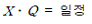
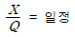
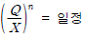
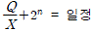
(정답률: 40%)
90. 다음 중 상온에서 물과 격렬히 반응하여 수소를 발생시키는 물질은?
- Ti
- K
- Fe
- Ag
(정답률: 67%)
91. 다음 중 화학공장에서 주로 사용되는 불활성 가스는?
- 수소
- 수증기
- 질소
- 일산화탄소
(정답률: 70%)
92. 다음 중 산업안전보건법상 화학설비의 부속설비로만 이루어진 것은?
- 사이클론, 백필터, 전기집진기 등의 분진처리설비
- 응축기, 냉각기, 가열기, 증발기 등의 열교환기류
- 고로 등 정화기를 직접 사용하는 열교환기류
- 혼합기, 발포기, 압출기 등의 화학제품 가공설비
(정답률: 58%)
93. 다음 중 산화성 물질의 저장ㆍ취급에 있어서 고려하여야 할 사항과 가장 거리가 먼 것은?
- 가열ㆍ충격ㆍ마찰 등 분해를 일으키는 조건을 주지말 것
- 분해를 촉진하는 약품류와 접촉을 피할 것
- 내용물이 누출되지 않도록 할 것
- 습한 곳에 밀폐하여 저장할 것
(정답률: 71%)
94. 다음 중 유류화재와 전기화재에 모두 사용할 수 있는 소화기로 가장 적당한 것은?
- 산ㆍ알칼리소화기
- 분말소화기
- 포말소화기
- 물소화기
(정답률: 60%)
95. 다음 중 축류식 압축기에 대한 설명으로 옳은 것은?
- casing 내에 1개 또는 수 개의 특수피스톤을 설치하여 이것을 회전시킬 때 casing과 피스톤 사이의 체적이 감소해서 기체를 압축하는 방식이다.
- 실린더 내에서 피스톤을 왕복시켜 이것에 따라 개폐하는 흡입밸브 및 배기밸브의 작용에 의해 기체를 압축하는 방식이다.
- casing 내에 넣어진 날개바퀴를 회전시켜 기체에 작용하는 원심력에 의해서 기체를 압송하는 방식이다.
- 프로펠러의 회전에 의한 추진력에 의해 기체를 압송하는 방식이다.
(정답률: 48%)
96. 포소화약제 혼합장치로서 정하여진 농도로 물과 혼합하여 거품 수용액을 만드는 장치가 아닌 것은?
- 관로혼입장치
- 차압혼합장치
- 펌프혼합장치
- 낙하혼합장치
(정답률: 56%)
97. 다음 가스 중 독성가스에 속하지 않는 것은?
- 암모니아
- 황화수소
- 포스겐
- 질소
(정답률: 65%)
98. 산업안전보건법에 따라 사업주가 특수화학설비를 설치하는 때에 그 내부의 이상상태를 조기에 파악하기 위하여 설치하여야 하는 장치는?
- 자동경보장치
- 안전감시장치
- 자동문개폐장치
- 스크러버개방장치
(정답률: 70%)
99. 다음 관(pipe) 부속품 중 관로의 방향을 변경하기 위하여 사용하는 부속품은?
- 플랜지(flange)
- 유니온(union)
- 니플(nipple)
- 엘보우(elbow)
(정답률: 71%)
100. 프로판의 폭발한계가 2.2 ~ 9.5vol% 일 때 위험도는 약 얼마인가?
- 2.52
- 3.32
- 4.91
- 5.64
(정답률: 64%)
6과목: 건설안전기술
101. 다음 기계 중 양중기에 포함되지 않는 것은?
- 리프트
- 곤돌라
- 크레인
- 클램셸
(정답률: 67%)
102. 강관비계의 종류 중 단관비계를 설치할 때 조립간격으로 옳은 것은? (단, 수직방향 수평방향의 순서임)
- 4m, 4m
- 5m, 5m
- 5.5m, 7.5m
- 6m, 8m
(정답률: 55%)
103. 30° 경사각의 가설통로에서 미끄럼막이 간격으로 알맞은 것은?
- 30cm
- 40cm
- 50cm
- 60cm
(정답률: 39%)
104. 양중기에 사용해서는 안되는 와이어로프에 대한 설명으로 잘못된 것은?
- 이음매가 있는 것
- 지름의 감소가 공칭지름의 7%를 초과하는 것
- 심하게 변형 또는 부식된 것
- 와이어로프의 한 꼬임에서 끊어진 소선의 수가 5%이상인 것
(정답률: 64%)
1⑤. 운반작업시 주의사항으로 옳지 않은 것은?
- 단독으로 긴 물건을 어깨에 메고 운반할 때에는 뒤쪽을 위로 올린 상태로 운반한다.
- 운반시의 시선은 진행방향을 향하고 뒷걸음 운반을 하여서는 안된다.
- 무거운 물건을 운반할 때 무게 중심이 높은 하물은 인력으로 운반하지 않는다.
- 물건을 들고 일어날 때는 허리보다 무릎의 힘으로 일어선다.
(정답률: 71%)
106. 가설통로를 설치할 때 준수하여야 할 사항에 관한 설명으로 잘못된 것은?
- 건설공사에 사용하는 높이 8m 이상의 비계다리에는 7m 이내마다 계단참을 설치한다.
- 경사가 15°를 초과하는 때에는 미끄러지지 않는 구조로 한다.
- 추락의 위험이 있는 곳에는 안전난간을 설치한다.
- 수직갱에 가설된 통로의 길이가 10m 이상인 때 에는 8m 이내마다 계단참을 설치한다.
(정답률: 68%)
107. 지게차 운전시의 안전사항에 해당되지 않는 것은?
- 짐을 들어올린 상태로 출발, 주행하여야 한다.
- 적재하물이 크고 현저하게 시계를 방해할 때에는 유도자를 붙여 차를 유도시키는 등의 조치를 취해야한다.
- 짐을 싣고 내리막 길을 내려갈 때는 전진으로 천천히 운행할 것
- 철판 또는 강목을 다리 대용으로 하여 통과할 때는 반드시 강도를 확인할 것
(정답률: 68%)
108. 흙막이공의 파괴원인 중 보일링 현상이 주된 원인이 되는 경우가 있다. 보일링 현상에 관한 설명으로 틀린 것은?
- 지하수위가 높은 지반을 굴착할 때 주로 발생한다.
- 연약 사질토 지반에서 주로 발생한다.
- 시트파일(sheet pile) 등의 저면에 분사현상이 발생한다.
- 연약 점토지반에서 굴착면의 융기로 발생한다.
(정답률: 54%)
109. 이동식 크레인 작업시 준수해야 할 사항으로 잘못된 것은?
- 운전사는 반드시 면허를 받은 자이어야 한다.
- 전력선 근처에서의 작업시 붐과 전력선과의 거리는 최소 1m 이상 간격을 유지한다.
- 부득이한 경우 전용 탑승설비를 설치하여 근로자를 탑승 시킬 수 있다.
- 제한된 지브의 경사각 범위에서만 작업을 해야 한다.
(정답률: 44%)
110. 흙막이 말뚝에 대한 지하수 재해방지상 유의하여야 할점으로 틀린 것은?
- 토압, 수압, 적재하중 등에 대하여 계획과 시공 중 관찰 측정한 결과를 비교 검토한다.
- 흙막이 말뚝의 근입길이를 짧게 하여 히빙 및 보일링현상을 방지한다.
- 지하수, 복류수 등의 상황을 고려하여 충분한 지수 효과를 갖도록 조치한다.
- 누수, 출수 등을 조기 발견할 수 있도록 해야 하며, 누수, 출수의 우려가 있을 경우에는 적절한 조치를 취한다.
(정답률: 68%)
111. 추락의 위험이 있는 개구부에 대한 방호조치로서 적합하지 않은 것은?
- 안전난간ㆍ울 및 손잡이 등으로 방호조치 한다.
- 충분한 강도를 가진 구조의 덮개를 뒤집히거나 떨어지지 않도록 설치한다.
- 어두운 장소에서도 식별이 가능한 개구부 주의표지를 부착한다.
- 폭 30cm 이상의 발판을 설치한다.
(정답률: 64%)
112. 통나무비계를 조립할 때 준수하여야 할 사항에 대한 아래 표의 내용에서 ( )에 가장 적합한 것은?
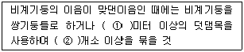
- ① : 1.0 ② : 4
- ① : 1.8 ② : 4
- ① : 1.0 ② : 2
- ① : 1.8 ② : 2
(정답률: 43%)
113. 화물을 차량계 하역운반기계에 적재 또는 적하시 작업 지휘자를 지정하여야 하는 기준에 대해 옳은 것은?
- 단위화물의 무게가 250kg 이상일 때
- 단위화물의 무게가 200kg 이상일 때
- 단위화물의 무게가 150kg 이상일 때
- 단위화물의 무게가 100kg 이상일 때
(정답률: 52%)
114. 토석붕괴의 외적 원인으로 옳지 않은 것은?
- 사면, 법면의 경사 및 기울기의 증가
- 절토 및 성토 높이의 증가
- 토사 및 암석의 혼합층 두께
- 토석의 강도 저하
(정답률: 58%)
115. 콘크리트 측압에 관한 설명으로 옳은 것은?
- 부어 넣기 속도가 빠르면 측압은 작아진다.
- 철근의 양이 적으면 측압은 작아진다.
- 대기의 온도가 낮을수록 측압은 크다.
- 구조물의 단면이 크면 측압은 작다.
(정답률: 57%)
116. 산업안전보건법령에 따라 사다리식 통로를 설치하는 경우 준수하여야 하는 사항으로 틀린 것은?
- 재료는 심한 손상, 부식 등이 없는 것으로 할 것
- 폭은 30센티미터 이상으로 할 것
- 발판의 간격은 동일하게 할 것
- 사다리 기둥과 수평면과의 각도는 85도 이하로 할 것
(정답률: 68%)
117. 철륜 표면에 다수의 돌기를 붙여 접지면적을 작게 하여 접지압을 증가시킨 롤러로서 고함수비의 점성토지반의 다짐작업에 적합한 롤러는?
- 탠덤롤러
- 로드롤러
- 타이어롤러
- 탬핑롤러
(정답률: 71%)
118. 굴착시 토석붕괴 방지공법에 대한 설명 중 틀린 것은?
- 활동할 가능성이 있는 토석은 제거해야 한다.
- 비탈면 하단을 다져서 활동이 되지 않도록 한다.
- 비탈면 상단에 다짐 또는 하중을 재하한다.
- 말뚝을 박아 토석 붕괴를 방지한다,
(정답률: 59%)
119. 차량계 건설기계를 사용하여 작업하고자 할 때 작업계획서에 포함되어야 할 사항으로 적합하지 않은 것은?
- 사용하는 차량계 건설기계의 종류 및 성능
- 차량계 건설기계의 운행경로
- 차량계 건설기계에 의한 작업방법
- 차량계 건설기계의 유지보수방법
(정답률: 61%)
120. 항타기 또는 항발기의 권상장치의 드럼축과 권상장치로부터 첫 번째 도르래의 축과의 거리는 권상장치의 드럼폭의 최소 몇 배 이상으로 해야 하는가?
- 5배
- 10배
- 15배
- 20배
(정답률: 58%)